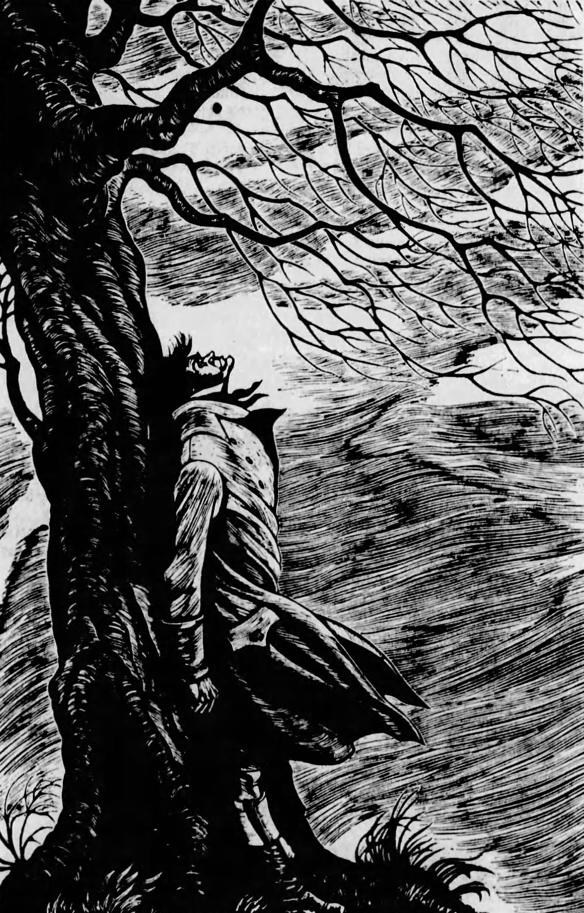
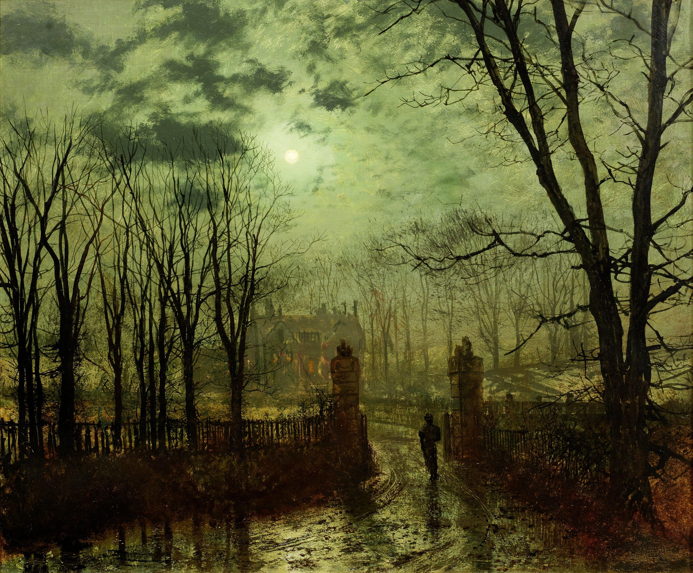
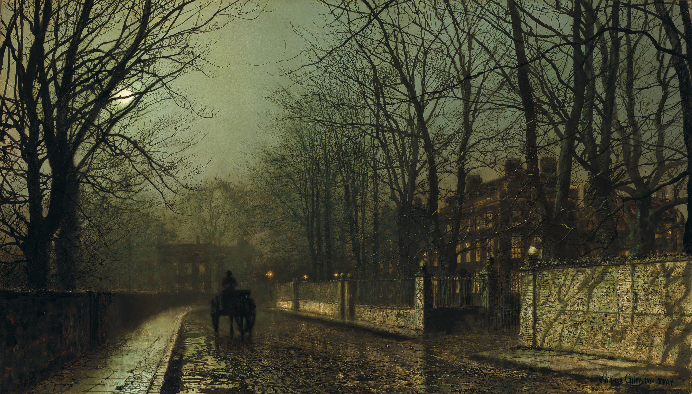
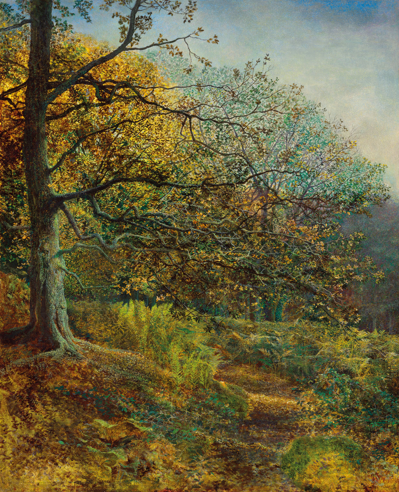
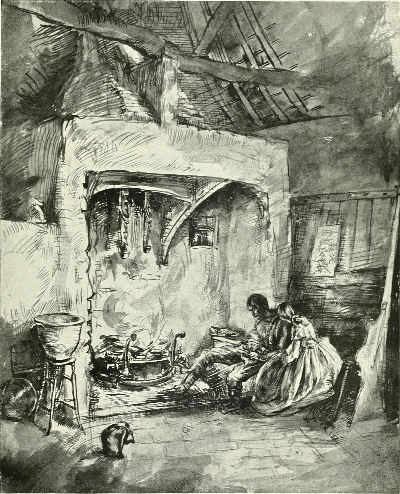

I · Storm-Battered House
November 1801 — A stranger arrives; a ghost appears; a story begins

Lockwood is a London gentleman who has rented Thrushcross Grange in the Yorkshire moors, imagining himself suited to solitude. His first act is to call on his landlord. The road north carries him across the moors until he reaches a farmhouse that seems to grow from the rock itself — low, dark, its name carved above the door: Wuthering Heights.
The master of the house is Heathcliff: a tall, dark man whose face carries both refinement and something harder underneath, a stored-up fury that makes his rare silences feel like pressure. He admits Lockwood grudgingly. The household is strange — a surly young woman, a rough-mannered young man named Hareton, and dogs that snap at visitors. Heathcliff does not explain any of them.
A blizzard traps Lockwood overnight. He is shown to a closed-off room with a bed built into a window alcove. In the ledge, names are scratched into the paint: Catherine Earnshaw, Catherine Heathcliff, Catherine Linton. An old diary fills the margins of a mildewed Bible. Lockwood reads himself drowsy.
"I have just returned from a visit to my landlord — the solitary neighbour that I shall be troubled with."
— Lockwood, opening the novel; his breezy condescension will be demolished by the tale that followsHe falls into a nightmare — or something worse. A child's hand reaches through the glass. A voice cries, "Let me in — let me in!" Lockwood panics and, horribly, rubs the wrist against the broken pane until the crying stops. He wakes screaming. Heathcliff bursts in, and Lockwood watches as the man throws open the window and calls into the darkness with a grief so raw it seems to hollow him out.
Heathcliff will not say who the ghost is. But Lockwood knows he needs to understand this house. Recovered at the Grange, he asks his housekeeper Nelly Dean how it came to this. Nelly was raised at the Heights. She knows everything. She begins.
The Frame Within the Frame
Brontë opens with two layers of unreliable narration — Lockwood retelling what Nelly tells him. Neither is neutral. The ghost in the window is not a horror-story device; it is the novel announcing its true subject before a word of backstory is spoken.
II · The Foundling
c. 1771–1783 — A child appears; a bond forms; cruelty sets the future in motion

Mr Earnshaw returns from Liverpool one evening with his coat wrapped around something — a ragged, starving boy he found alone in the city streets. He cannot say where the child came from. He names him Heathcliff, after a son who died, and that is all the origin the novel ever provides. The unknown origins carry weight the story never quite releases.
Hindley Earnshaw loathes the intruder from the first hour. He is the heir; this foundling has no claim, no name, no place — and yet his father favours him. The resentment calcifies over years into something systematic. But Catherine Earnshaw, wild and quick and fearless, takes to Heathcliff immediately. They run together on the moors from childhood, two creatures who have found their other half.
"He's more myself than I am. Whatever our souls are made of, his and mine are the same."
— Catherine Earnshaw, to Nelly DeanWhen Mr Earnshaw dies, Hindley inherits the Heights and moves swiftly. Heathcliff is stripped of his education, reduced to a farmhand, made to sleep in the servants' quarters. Every degradation is precise and intentional. Hindley does not simply resent Heathcliff — he sets about unmaking him, erasing the education and status that Earnshaw had given him, returning him to the condition of a street urchin.
Heathcliff endures. He endures because Catherine is still there, still his, still slipping out at night to run across the dark moors with him — two outcasts who have made the wilderness their home. This is the period the novel holds as its lost paradise: before class, before marriage, before the world intervened. It will not last.
The Making of a Monster
Hindley does not create Heathcliff's capacity for cruelty — but he gives it its shape. Every act of revenge Heathcliff commits later mirrors what was done to him here, with surgical precision. The novel forces the question: what is the difference between Hindley and Heathcliff — between the one who inflicted the original wound and the one who later mirrors it exactly?
III · Thrushcross Grange
c. 1778–1783 — Civilisation claims Catherine; Heathcliff overhears what will destroy him

One autumn evening, Catherine and Heathcliff slip away to spy on Thrushcross Grange. Through the lit windows they see another world — carpeted floors, fine furniture, two children bickering over a lapdog in a room that seems to belong to a different England entirely. Then a dog bites Catherine's ankle as they flee, and the Lintons take her inside to recover.
She stays five weeks. She returns transformed — dressed well, her wildness smoothed into something that can pass in drawing rooms. Heathcliff, left at the Heights, has not been transformed. He notices the gap opening between them. Edgar Linton, the Grange's gentle, fair-haired son, begins to court her.
Catherine tells Nelly she has accepted Edgar's proposal. She knows she loves Heathcliff more deeply — he is her soul, her substance, not merely a person she desires. But Edgar can give her position, comfort, status. Heathcliff cannot. She means to marry Edgar and keep Heathcliff close, somehow. It is an impossibility she refuses to see as one.
What she does not know — what Nelly watches her not-know — is that Heathcliff is in the room. He hears her say she cannot marry him. He does not stay to hear her say that her love for him is "like the eternal rocks beneath." He is gone before she says it. He slips out of the Heights into the dark, and disappears entirely.
"My love for Linton is like the foliage in the woods: time will change it... My love for Heathcliff resembles the eternal rocks beneath: a source of little visible delight, but necessary."
— Catherine Earnshaw, to Nelly Dean; Heathcliff has already left the roomThe Choice That Unmakes Everything
Catherine does not choose Edgar over Heathcliff — she believes she can have both, that love and marriage are separate things. The novel does not let this stand. Her failure to imagine the cruelty of her position sets the catastrophe in motion.
IV · The Return
1783–1784 — He comes back changed; she cannot survive the contradiction

Three years pass. Catherine is Edgar's wife, settled at Thrushcross Grange. Hindley has drunk himself into ruin at the Heights since his wife's death. Then Heathcliff walks back.
He is unrecognisable — or rather, the rough boy is recognisable underneath a transformation that seems willed into existence by pure fury. He is wealthy now, erect, commanding. He will not say where he has been or how he made his money. He moves into the Heights, where Hindley, desperate for gambling funds, cannot refuse him. And he calls on Catherine at the Grange.
The reunion is devastating. Catherine weeps with joy that she cannot explain to Edgar, who watches with the clarity of a man who sees exactly what is lost to him. Heathcliff and Catherine have not become less to each other — three years have made the feeling darker, more dangerous. But she is married. She is Edgar's. And Edgar is not Heathcliff.
Catherine begins to fracture under the impossibility she has constructed. She cannot have both, and having half of either is unbearable. Her mind breaks first — a feverish illness that Nelly watches with a mixture of sympathy and judgement. She rallies briefly. She is pregnant. In the early hours of a March morning, she gives birth to a daughter — Cathy Linton — and dies before dawn. Heathcliff, waiting in the garden below, hears the news and howls at the sky.
"Be with me always — take any form — drive me mad! only do not leave me in this abyss, where I cannot find you! I cannot live without my life! I cannot live without my soul!"
— Heathcliff, after Catherine's death, raging at her graveThe Cost of Returning
Heathcliff comes back to claim what was taken from him. But Catherine cannot be claimed — she was already pulled apart by two worlds she refused to choose between. His return does not cause her death so much as reveal it was always coming.
V · Death and Revenge
1784–1801 — Heathcliff takes everything; no estate, no person, no generation escapes

With Catherine gone, Heathcliff's grief cures itself into something cold and methodical. He has a plan, and it is executed across two decades with the patience of a man who has nothing else to live for.
Hindley Earnshaw is easy — already half-ruined by drink and grief, he gambles away the Heights to Heathcliff and dies shortly after, leaving his young son Hareton in Heathcliff's care. Heathcliff raises Hareton exactly as Hindley raised him: denied education, denied dignity, kept useful and kept low. The mirror is exact and deliberate.
Edgar Linton's sister Isabella is less guarded than wisdom allows — she mistakes his cruelty for passion, reads the gothic outsider as romantic hero, and elopes with him despite every warning. The marriage is a calculated cruelty. He treats her with open contempt and she flees south, bearing his son: sickly, peevish Linton Heathcliff. She dies about twelve years later; Edgar keeps the boy until Heathcliff claims him as he closes in on the Grange.
"I have not broken your heart — you have broken it; and in breaking it, you have broken mine."
— Heathcliff to CatherineWhen Edgar Linton is dying, Heathcliff moves on the Grange. He lures young Cathy Linton — Catherine and Edgar's daughter, now sixteen — to the Heights and forces her marriage to his ailing son Linton Heathcliff. Edgar dies before she can return to him. Linton Heathcliff, already failing, dies weeks later. Cathy does not mourn the husband she was coerced into — she mourns her father, and she is given no time even for that: Heathcliff locks her at the Heights, a servant in the house she now technically owns through the very marriage he arranged. Both estates are his.
He has everything. He has nothing. Catherine is still dead.
Revenge as Hollow Architecture
Every move Heathcliff makes is legally sound, financially precise, and emotionally exact — a mirror of every humiliation visited on him. But acquiring property and degrading his enemies does not bring Catherine back. The novel has been showing us this the whole time.
VI · The Ghost Appeased
1802 — Something shifts; hatred exhausts itself; the moors remember

Lockwood returns to the moors a year after his winter visit, expecting the same frozen tableau. Instead he finds Wuthering Heights softened — firelight visible through the windows, voices inside that sound almost like ordinary life. Cathy Linton and Hareton Earnshaw have discovered each other. They are reading together, and if Cathy is the teacher it is done with something gentle in it.
Nelly tells him the rest. Something changed in Heathcliff after Cathy began to teach Hareton letters — something in seeing Hareton's face, seeing Catherine's eyes in a young man who had been degraded exactly as he once was. The vengeance had reproduced the original injury. He looked at it and could not eat, could not sleep. He saw Catherine's face everywhere, felt the distance between them thinning to nothing.
"Catherine Earnshaw, may you not rest as long as I am living; you said I killed you — haunt me, then!"
— Heathcliff, at Catherine's graveHe stopped eating. He sat alone in the room where Catherine's ghost had appeared to Lockwood and kept the window open. Nelly found him one morning in the alcove, rain on his face, the window swinging wide. Dead. His expression, she says, was not peaceful — but it was not in pain either. It was something she could not name.
He is buried beside Catherine, as he arranged. Years earlier, when grief had grown unbearable, he had bribed the sexton to open her coffin so he could look at her face — and had the sides of both their coffins loosened, so that when his own decays and hers does, their remains will mingle. The union refused in life is arranged in earth.
The local people say two figures walk the moors together on stormy nights. Lockwood passes the graves on his way south — Edgar, Catherine, Heathcliff, side by side. He wonders how anyone could imagine unquiet slumbers for the sleepers in that quiet earth. The novel does not share his confidence.
What Survives the Storm
Cathy and Hareton — the second generation — inherit both houses and enough lightness to be happy. Where Catherine could not release Heathcliff, Cathy approaches Hareton with patience; where wildness destroyed the first pair, education and earned understanding save the second. Heathcliff, having spent his rage and his grief, simply steps toward whatever he has been walking toward since Catherine died. The moors remain.
Why It Matters
Themes, legacy, and what makes this novel still burn
Love as Identity
- Catherine and Heathcliff claim to be each other — "He's more myself than I am" is ontology, not romance
- Separating them severs not a relationship but a self — the destruction that follows is logical, not melodramatic
- The novel asks what happens when an identity-bond meets class, convention, and a woman's need for comfort
- No clean answer is offered — and none is possible
Class and Its Violence
- Heathcliff arrives with no name, no history, no race the novel will specify
- Society strips him methodically; his revenge mirrors every humiliation with surgical precision
- The novel refuses simple condemnation — his tormentors are visible in his methods
- Monster or product? The novel insists both simultaneously, and denies the reader a clean verdict
Wild vs. Civilised
- The moors and the Heights represent passion, freedom, cold — and ultimately death
- Thrushcross Grange represents warmth, refinement, compromise — and life with its limits
- Catherine tries to inhabit both worlds; the impossibility kills her
- Only the second generation, chastened and patient, manages to survive the same tension
Legacy and Endurance
- Brontë published under "Ellis Bell" and died at thirty — her sex revealed only after death
- Dismissed as brutal and coarse in 1847; never out of print since
- Adapted for film over twenty times; inspired Kate Bush, Sylvia Plath, and generations of Gothic writers
- Its power resists explanation — which may be the point
Fun Facts
- Emily published as "Ellis Bell" — her publishers and most readers assumed the author was male. Her sex was revealed only after her death.
- The novel was poorly received on first publication. Critics found it "coarse" and "brutal." One called Heathcliff "a deformed monster." Charlotte Brontë spent years defending her sister's reputation.
- Kate Bush wrote and recorded "Wuthering Heights" in a single night in 1977, aged eighteen. It reached number one in the UK and became one of the best-known pop songs of the twentieth century.
- Emily drew heavily on the landscape around Haworth, Yorkshire, where she spent almost her entire life. The farmhouse thought to inspire Wuthering Heights — Top Withens — still stands, ruined, on the moor.
- Heathcliff's racial identity is deliberately ambiguous. Earnshaw calls him a "gipsy brat"; characters call him "dark"; his origin in Liverpool — a major slave-trade port — is rarely accidental. Scholars have debated his possible mixed-race background for decades.
- The novel has two interlocking timeframes separated by a generation — a structural complexity that confused early readers but is now considered one of its greatest achievements.
Celebrated Quotes
"He's more myself than I am. Whatever our souls are made of, his and mine are the same."
— Catherine Earnshaw, to Nelly Dean
"If all else perished, and he remained, I should still continue to be; and if all else remained, and he were annihilated, the universe would turn to a mighty stranger."
— Catherine Earnshaw
"Be with me always — take any form — drive me mad! only do not leave me in this abyss, where I cannot find you! I cannot live without my life! I cannot live without my soul!"
— Heathcliff, after Catherine's death, raging at her grave
"I wish I were a girl again, half-savage and hardy, and free."
— Catherine Earnshaw, on her deathbed
"Catherine Earnshaw, may you not rest as long as I am living; you said I killed you — haunt me, then!"
— Heathcliff, at Catherine's grave
"Nelly, I am Heathcliff!"
— Catherine Earnshaw, the novel's most famous declaration
"I have not broken your heart — you have broken it; and in breaking it, you have broken mine."
— Heathcliff to Catherine
"If he loved with all the powers of his puny being, he couldn't love as much in eighty years as I could in a day."
— Catherine Earnshaw, on Edgar Linton
Quiz
Three questions on the ideas beneath the story
1. Catherine says "I am Heathcliff." What does this claim most precisely express?
2. Heathcliff's revenge is systematic and legally sound. What does this reveal about the novel's view of class violence?
3. Why does Cathy and Hareton's relationship matter to the novel's ending?